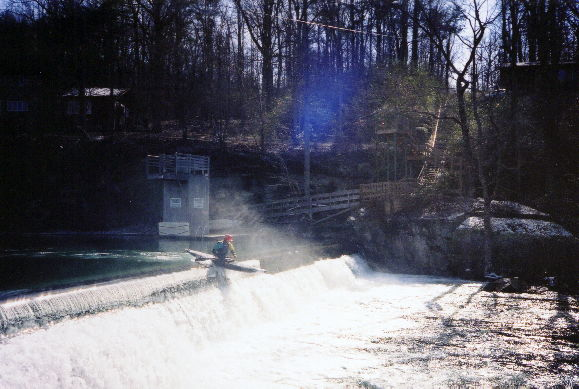
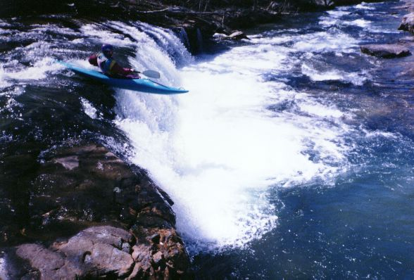
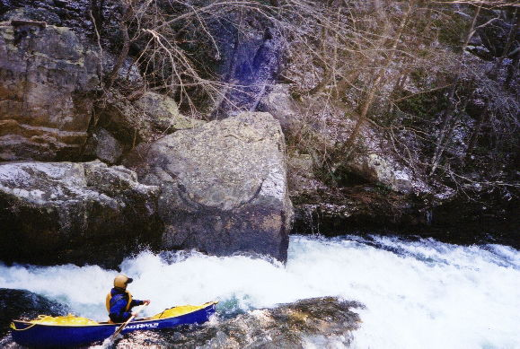
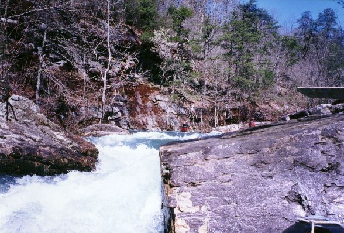
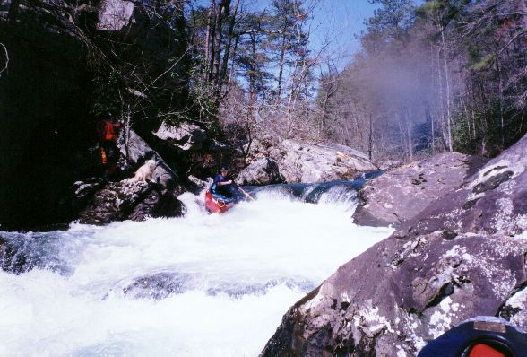

West Fork of the Little River

The next sound heard was "bonk". The
landing zone is shallow for the Lake Howard Dam. This is easily walked.

Greg Hunt runs the second drop of the optional
class IV at the put-in

Dave B. heads into the final put-in rapid drop.
You can also boof this off the outcrop rock to his right.

Dave Curry from a low angle

Dave Curry on line in the hardest rapid after the
put-in rapid